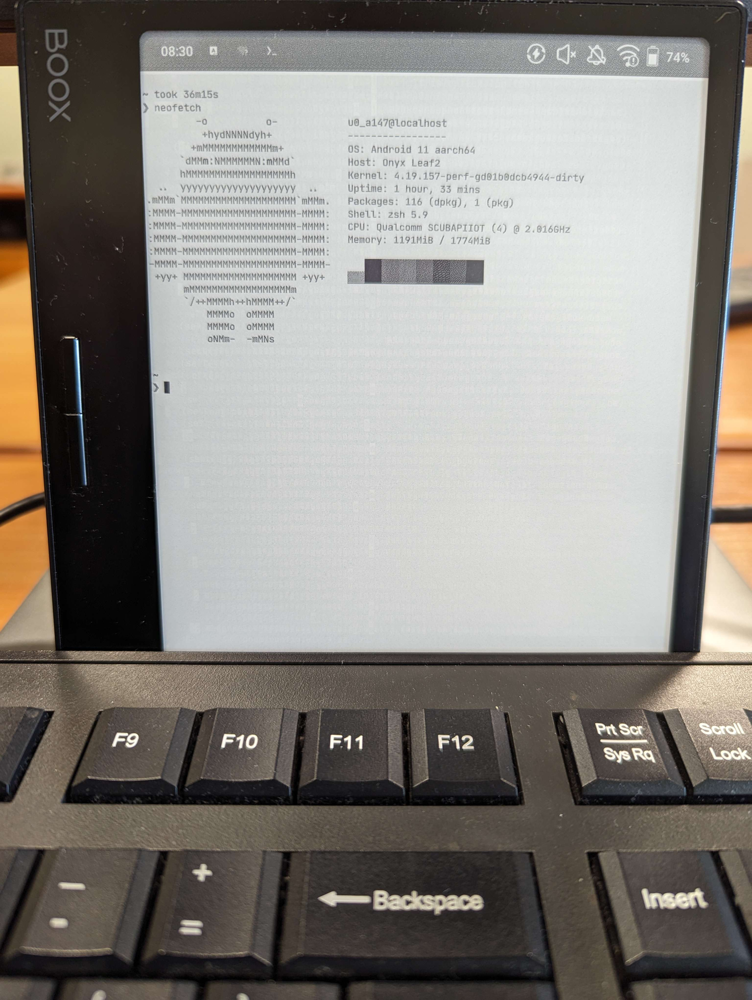

Cursed idea
Posted on: 04.09.2023 - @Moskas
Background
Ever since I got my first e-ink reader with Android, I've been wondering about other uses I can find for it. One of the initial thoughts was to check if it supports a keyboard and mouse via a USB dongle, and it indeed works without any problems. So, naturally, after that, I had a rather stupid idea.
Why not try installing Termux and set up a portable writing environment on it?
To be fair, I've done the exact same thing before with my phones, partly because I needed to use some Linux tools on the go to debug network problems at work.
Shortcomings
One of the issues with my chosen device in this setup is its underlying hardware. Primarily, there's a lack of CPU power and a sparse amount of RAM. The device I'm using is the Onyx Boox Leaf 2, and for its intended purpose, it's more than sufficient. I've read many books and mangas on it without any issues, but the main struggle arose when I began setting up Emacs in Termux.
As a Doom-Emacs user, I cloned the repository and launched the installation command. However, the tablet struggled with it because it had to compile some code during the installation, and due to the low system memory, Termux kept closing itself. Thankfully, doom-emacs is intelligent; it was able to pick up where it left off. So, after a couple of attempts, it managed to finish the installation.
Summary
In my opinion, the e-ink display is responsive enough for writing text and some code. However, I do not recommend using a mouse with it due to the input delay and the way the screen refreshes, which does not provide a good user experience. The main drawback for writing code, however, is the lack of syntax colors due to the black-and-white screen. (At least for my model; there are some color-capable e-ink devices, and one day I might try using one of those.)
Battery life also appears to be worse, which could be attributed to Termux being more demanding than any other application I've used, or the USB hub might be drawing enough power to deplete the battery much more quickly than before. Keeping that in mind, this setup is more of a proof of concept rather than an ideal workflow that would replace my laptop.
What's next? How about setting up nix-on-droid instead of pure Termux?